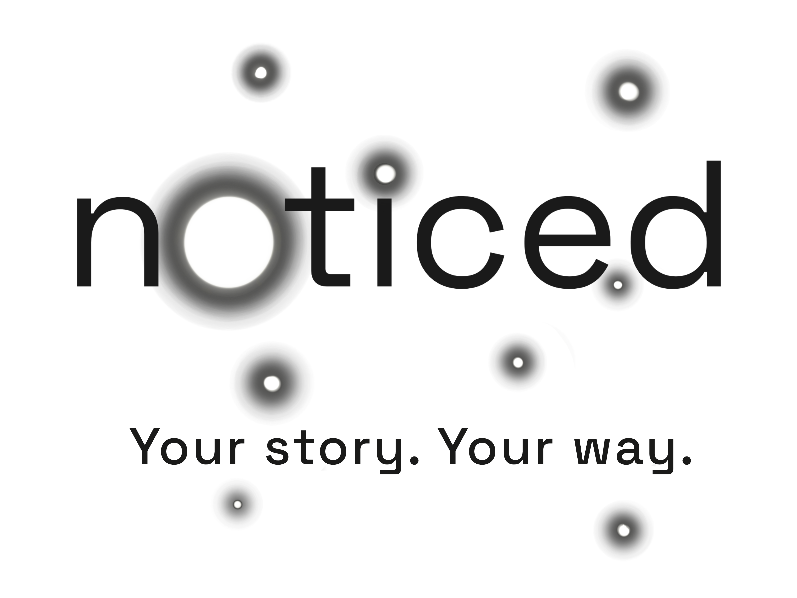
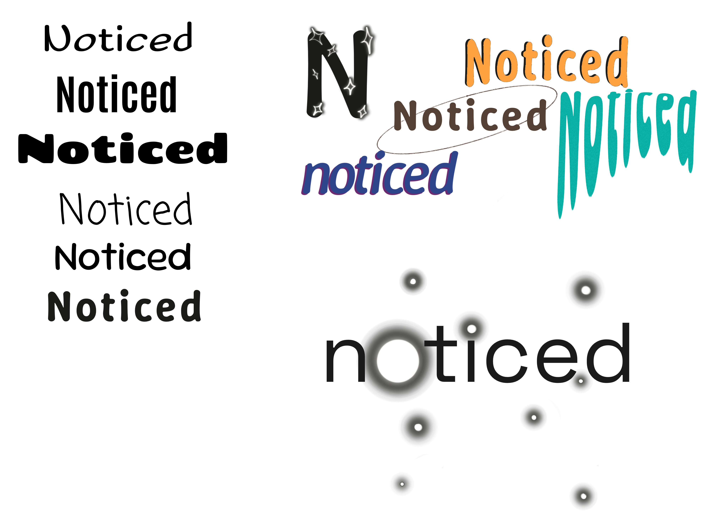
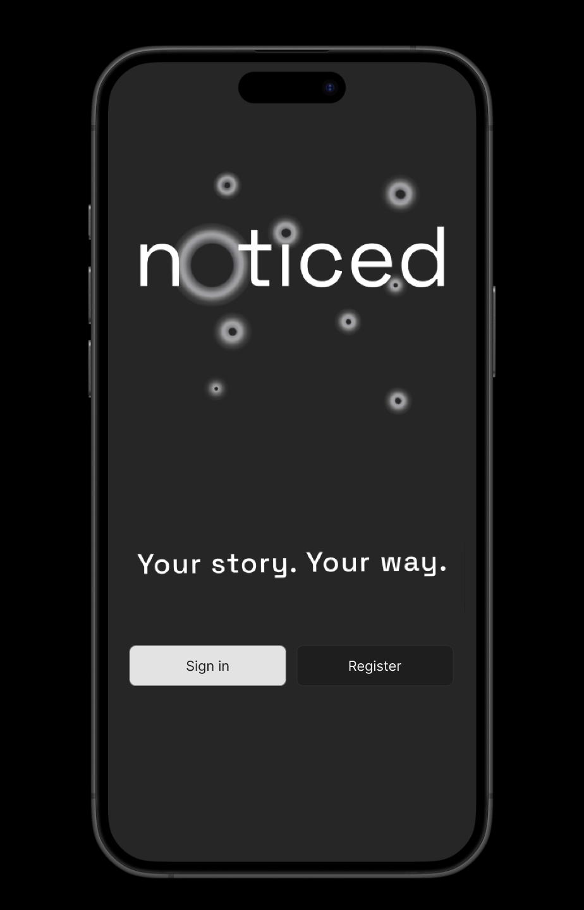
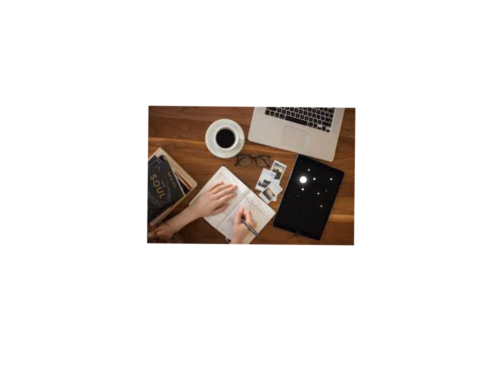

Overview
Noticed is a self-directed project designed to solve tracking burnout through a flexible system of icons and printable templates.
Case Study

Noticed is a self-directed project designed to solve tracking burnout through a flexible system of icons and printable templates.
Noticed is a self-directed project designed to solve tracking burnout through a flexible system of icons and printable templates.
The visual identity centers on a constellation metaphor: each symptom signal is treated as one star in a larger pattern, helping users build clarity over time without pressure to log perfectly.




| Design Deliverables | Output |
|---|---|
| Brand Strategy | Constellation metaphor, visual language, and naming system. |
| UX Artifacts | Icon library, adaptive symptom templates, and concept journey maps. |
| Interface Design | High-fidelity dark mode screens with accessibility-focused contrast rules. |
| Print + Product | Journal layouts and brand collateral for tactile, low-energy use cases. |